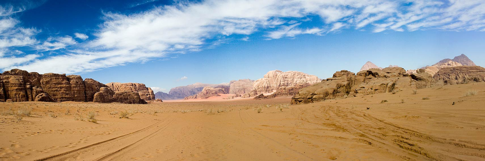
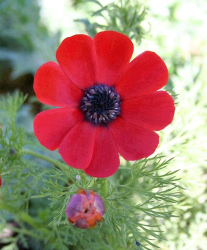
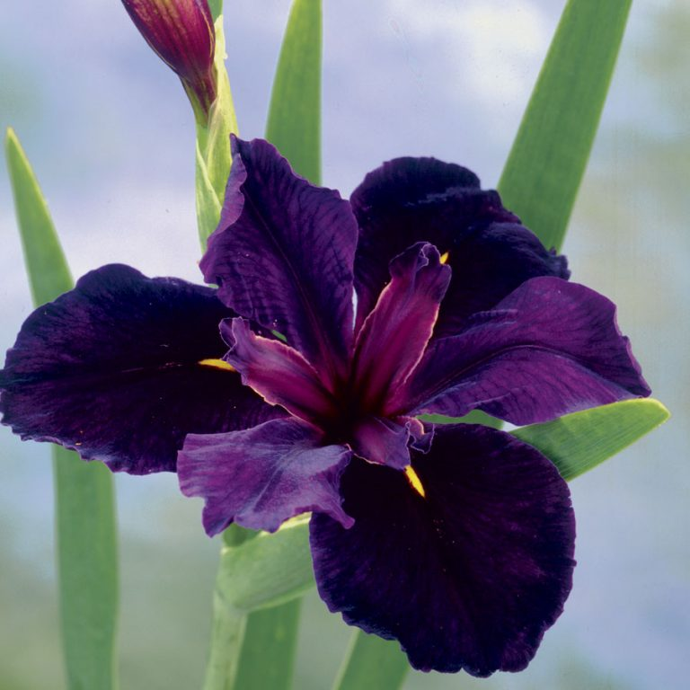
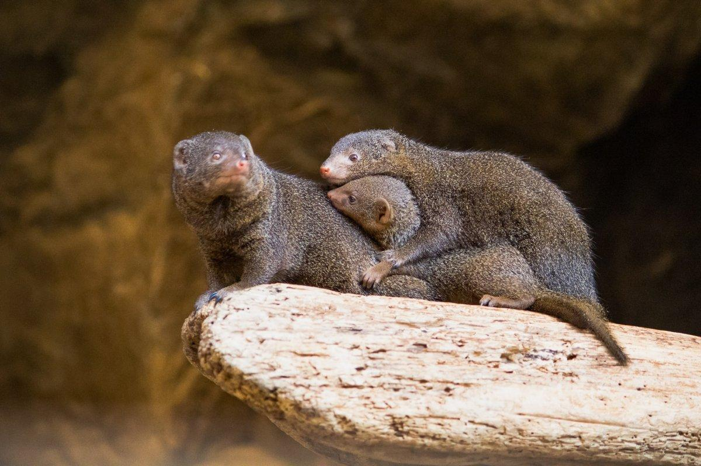
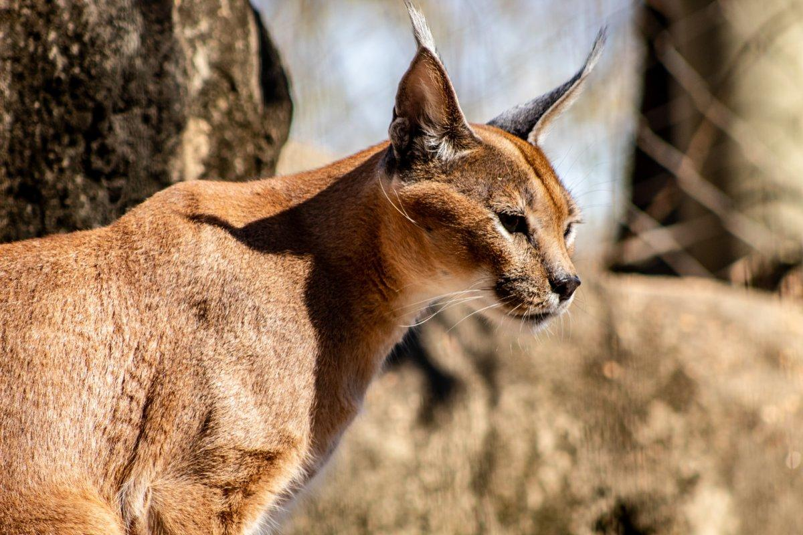
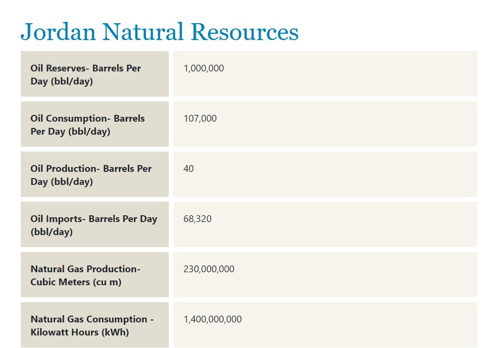

The land of Jordan is positioned in the Middle east and is surrounded by neighboring regions
such as Iraq to the east, Syria to the north, Saudi Arabiato the east and south, and Israel
to the west alongside the West Bank. Jordan covers a little over 91,000 square kilometers of
land including the Dead Sea, with 75% of this land containing desert. For the coordinates,
those include the latitude being at 31º 57′ N and the longitude at 35º 56′ E. The most noticeable
areas of this region are divided into three sections, the Jordan Valley, the Mountain Heights
Plateau, and the desert area to the east which is also called the Badia region.
Climate

With the region being mostly desert, one could most likely guess the climate of this region.
Jordan has a Mediterranean climate where the weather is usually hot and dry all year long with
a little coolness and wet periods in the winter. The area is so dry that the region only gets
as little as 200mm of rain every year. To make things worse, this amount of rain is usually
only given between the months of November and April resulting in a struggle for hydration for
majority of the year. Although this is true, residents are usually given a little break during
the nighttime with more cool, calm air. In addition, transportation, especially in/to the city
of Amman can be fairly easy. This allows for easy exploration to some of the scenery that Jordan
provides including the greenery of Jordan valley, the desert areas to the east, impressive sandy
hilltops, and even the gorgeous city of Irbid.
Fauna and Flora


Jordan contains a diverse set of flora that appear all throughout the land. They host an abundance of
flowers that blossom brightly throughout the spring season. Some know flowers include the Anemonis which
displays a rich red color to the eye and the Black Iris that presents a violet purple look to many fields
in Jordan. In addition, due to the dry climate within Jordan, many plant and tree shrubs can be seen along
the land. This is due to these types of plants requiring less water than most plants. When entering the
region, many shrubs can be seen in forest areas and even in drier desert areas.


With flora comes fauna, and Jordan may be empty in many areas, but that doesn’t mean that there isn’t
enough room for the wildlife. In some areas, one can spot the fierce striped hyenas or the caracals
which resemble a larger type of cat. Some may even spot some horned animals such as the Arabian oryx or
the mountain gazelle. Let’s not forget about the air and water now. There are many of these types of
creatures that range from the lappet-faced vulture, pharaoh eagle-owl, and great white pelican to the
whale shark in all its dotted glory. Thus, if there’s one nature filled place to visit, Jordan’s the place.
Natural Resources

Jordan specializes, but is not limited to the exportation of oil, natural gas production, and
electricity production. In addition, other natural resources include phosphates, potash, and
shale oil. Each of these resources are utilized differently. For example, shale oil is used to
produce heating oil, gasoline, and machine fuel while potash and phosphates are used mainly to
support plants: plant growth, structure support, disease resistance, etc.